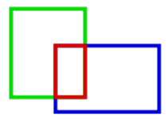
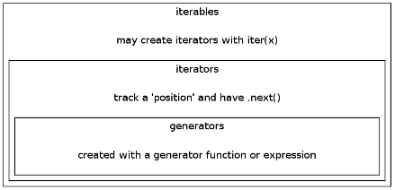

Interview Questions III - 2017
How can we copy an object in Python?
With new_list = old_list, we don't actually have two lists. The assignment just copies the reference to the list, not the actual list, so both new_list and old_list refer to the same list after the assignment as we can see the following example:
>>> a = range(5) >>> a [0, 1, 2, 3, 4] >>> b = a >>> b [0, 1, 2, 3, 4] >>> id(a) == id(b) True >>> a.pop() 4 >>> b [0, 1, 2, 3] >>> a.remove(3) >>> b [0, 1, 2] >>> del a[2] >>> b [0, 1]
To copy the list, we can use slice:
>>> a = range(5) >>> b = a[::] >>> b [0, 1, 2, 3, 4] >>> id(a) == id(b) False >>> a.remove(4) >>> b [0, 1, 2, 3, 4]
From the output, we see we actually copied the list.
We may also use built-in list() function as well:
>>> a = range(5) >>> b = list(a) >>> id(a) == id(b) False >>> a.remove(4) >>> b [0, 1, 2, 3, 4]
We can also use copy.copy() or copy.deepcopy():
import copy
class A(object):
def __init__(self, s):
self.x = s
a = A("Hello")
a1 = copy.copy(a)
a2 = copy.deepcopy(a)
print a1.x
print a2.x
For dictionary object, we can use dict.copy():
>>> d = {'a':1, 'b':2, 'c':3}
>>> d1 = d.copy()
>>> print d1
{'a': 1, 'c': 3, 'b': 2}
For a sequence like list, we can do copy simply:
>>> l = [1,2,3] >>> l1 = l[:] >>> print l1 [1, 2, 3]
Here is a relatively complete sample code:
class Foo(object):
def __init__(self,value):
self.value = value
def __repr__(self):
return str(self.value)
foo = Foo(1)
a = ['foo', foo]
b = a
c = a[:]
d = list(a)
e = copy.copy(a)
f = copy.deepcopy(a)
# Now we copied the original object.
# Let's modified the original,
# and see how it affects the copied object.
a.append('bar')
foo.value = 999
print('contents of objects')
print('original : %r\n assign : %r\n slice : %r\n'
'list : %r\n copy : %r\n deepcopy: %r\n'
% (a,b,c,d,e,f))
print
print('Is it the same object as a-object?')
print('assign : %r\n slice : %r\n'
'list : %r\n copy : %r\n deepcopy: %r\n'
% (id(b)==id(a), id(c)==id(a), id(d)==id(a),
id(e)==id(a), id(f)==id(a)))
Output:
contents of objects original : ['foo', 999, 'bar'] assign : ['foo', 999, 'bar'] slice : ['foo', 999] list : ['foo', 999] copy : ['foo', 999] deepcopy: ['foo', 1] Is it the same object as a-object? assign : True slice : False list : False copy : False deepcopy: False
Dictionary copy:
d = {1:10,2:20,3:30}
d2 = d
d3 = dict(d)
d4 = copy.deepcopy(d)
d[1] = 101
print d,d2,d3,d4
Output:
{1: 101, 2: 20, 3: 30} {1: 101, 2: 20, 3: 30} {1: 10, 2: 20, 3: 30} {1: 10, 2: 20, 3: 30}
What will be the output from the code below"
a = [1,2,4,1,2,3]
s = set(a)
def check(n):
if n in s:
return True
else:
return False
print filter(check, a)
filter() takes two args: (fn, sequence), and returns a list. The filter() will return all items from the list a which return True when passed to the function check() which will check if the value is in the set, s. Since all the numbers in the set come from the values list, all of the original values in the list will return True. So, the output should look like this:
[1, 2, 4, 1, 2, 3]
We have an array of integers, and for each index we want to find the product of every integer except the integer at that index.
For example, given:
[5, 7, 3, 4]
our function would return:
[84, 60, 140, 105]
by calculating:
[7*3*4, 5*3*4, 5*7*4, 5*7*3]
Here is the code:
a = [5,7,3,4]
print a
out = []
for i,e1 in enumerate(a):
prod = 1
for j,e2 in enumerate(a):
if i != j:
print e2,
prod *= e2
print
out.append(prod)
print out
Output:
[5, 7, 3, 4] 7 3 4 5 3 4 5 7 4 5 7 3 [84, 60, 140, 105]
Another solutions, please check Interview Questions 4
What's the output from the following code?
import pickle
class account:
def __init__(self, id, balance):
self.id = id
self.balance = balance
def deposit(self, amount):
self.balance += amount
def withdraw(self, amount):
self.balance -= amount
my_account = account('00123', 1000)
my_account.deposit(700)
my_account.withdraw(400)
fd = open( "archive", "w" )
pickle.dump( my_account, fd)
fd.close()
my_account.deposit(500)
print my_account.balance,
fd = open( "archive", "r" )
my_account = pickle.load( fd )
fd.close()
print my_account.balance
Answer:
1800 1300
Find the overlapped rectangle.

import json
class rect(object):
def __init__(self,x=1,y=1,w=10,h=5):
self.geom = {'x':x, 'y':y, 'width': w, 'height': h}
def __repr__(self):
return (json.dumps(self.geom))
def getKey(item):
return item[0]
def intersection(r1,r2):
# rect 1
x11 = r1.geom['x']
x12 = x11 + r1.geom['width']
y11 = r1.geom['y']
y12 = y11 + r1.geom['height']
# rect 2
x21 = r2.geom['x']
x22 = x21 + r2.geom['width']
y21 = r2.geom['y']
y22 = y21 + r2.geom['height']
# construct list of tuples
x = [(x11,x12),(x21,x22)]
y = [(y11,y12),(y21,y22)]
# sort the list
x = sorted(x, key=getKey)
y = sorted(y, key=getKey)
# get intersection
xmin = x[0][0]
xmax = x[1][1]
if x[0][1] > x[1][0]:
xmin = x[1][0]
xmax = x[0][1]
else:
xmin = None
xmax = None
if y[0][1] > y[1][0]:
ymin = y[1][0]
ymax = y[0][1]
else:
ymin = None
ymax = None
return (xmin,xmax),(ymin,ymax)
if __name__=='__main__':
# rect (x=1,y=1,w=10,h=5):
r1 = rect(2,2,2,2)
r2 = rect(1,1,2,2)
#r2 = rect(0,0,1,1)
#r2 = rect(3,3,2,2)
#r2 = rect(5,5,1,1)
print 'r1 = ', r1
print 'r2 = ', r2
x,y = intersection(r1,r2)
if x[0] == None or x[1] == None or y[0] == None or y[1] == None:
print 'No overlap'
else:
rOverlapped = rect(x[0],y[0],x[1]-x[0],y[1]-y[0])
print 'rOverlapped = ', rOverlapped
Output:
r1 = {"y": 2, "x": 2, "height": 2, "width": 2}
r2 = {"y": 1, "x": 1, "height": 2, "width": 2}
rOverlapped = {"y": 2, "x": 2, "height": 1, "width": 1}
Output from the code below?
class Planet:
def __init__(self, sz):
pass
self.size = sz
mars = Planet(2106)
mars.__dict__['rank'] = 4
print mars.size + len(mars.__dict__)
We created a member variable named 'rank' by adding it directly the objects dictionary. The value of 'size' is initialized to 2106. There are 2 items in the dictionary, 'rank' and 'size', therefore the sum of the 'size' value 2106 and then size of the dictionary, 2 items, is 2108.
Write a code that prints out n Fibonacci numbers.
# iterative
def fibi(n):
a, b = 0, 1
for i in range(0,n):
a, b = b, a+b
return a
# recursive
def fibr(n):
if n == 0: return 0
if n == 1: return 1
return fibr(n-2)+fibr(n-1)
for i in range(10):
print (fibi(i), fibr(i))
Output:
(0, 0) (1, 1) (1, 1) (2, 2) (3, 3) (5, 5) (8, 8) (13, 13) (21, 21) (34, 34)
We can also use generator:
def fib_generator(n):
a, b = 0, 1
for i in range(n):
yield "({},{})".format(i,a)
a, b = b, a+b
# loop through the generator
for item in fib_generator(10):
print(item)
Output:
(0,0) (1,1) (2,1) (3,2) (4,3) (5,5) (6,8) (7,13) (8,21) (9,34)
In the previous section, we calculated the fibonacci sequence. Now, we want to check how may iteration (loops) are required for each method. Modify the the code, and get the number of iterations.
marks = []
def fiboi(n):
a,b = 0,1
for i in range(n):
a,b = b, a+b
marks.append('i')
return a
def fibor(n):
if n == 0 or n == 1:
count.append('r')
return n
marks.append('r')
return fibor(n-1)+fibor(n-2)
def fiboy(n):
a,b = 0,1
for i in range(n):
marks.append('y')
yield a
a,b = b, a+b
n = 10
for i in range(n):
print fiboi(i),
print
for i in range(n):
print fibor(i),
print
for i in fiboy(n):
print i,
print
print '(iterative:%d recursive:%d generator(yield):%d)' %(marks.count('i'), marks.count('r'), marks.count('y'))
Output:
(iterative:45 recursive:133 generator(yield):10)
Note that the using generator via yield requires the fewest iterations because it goes back where it left off in the function and does not have to start it over!
We can measure processing times as well:
import time
marks = []
def fiboi(n):
a,b = 0,1
for i in range(n):
a,b = b, a+b
marks.append('i')
return a
def fibor(n):
if n == 0 or n == 1:
count.append('r')
return n
marks.append('r')
return fibor(n-1)+fibor(n-2)
def fiboy(n):
a,b = 0,1
for i in range(n):
marks.append('y')
yield a
a,b = b, a+b
n = 10
tici = time.clock()
for i in range(n):
print fiboi(i),
toci = time.clock()
print
ticr = time.clock()
for i in range(n):
print fibor(i),
tocr = time.clock()
print
ticy = time.clock()
for i in fiboy(n):
print i,
tocy = time.clock()
print
print 'iteration - (iterative:%d recursive:%d generator(yield):%d)' %(marks.count('i'), marks.count('r'), marks.count('y'))
print 'processing time - (iterative:%f recursive:%f generator(yield):%f)' %(toci-tici, tocr-ticr, tocy-ticy)
Output:
0 1 1 2 3 5 8 13 21 34 0 1 1 2 3 5 8 13 21 34 0 1 1 2 3 5 8 13 21 34 iteration - (iterative:45 recursive:133 generator(yield):10) processing time - (iterative:0.001479 recursive:0.001263 generator(yield):0.000656)
Implemented a Stack class, and we should have a function getMax() that returns the largest element in the stack with constant time access.
class Stack:
def __init__(self):
self.items = []
self.currentMax = None
def push(self,data):
self.items.append(data)
if self.currentMax:
if data > self.currentMax:
self.currentMax = data
else:
self.currentMax = data
def pop(self):
if not self.items:
return self.items.pop()
return None
def peek(self):
if not self.items:
return self.items[-1]
return None
def getMax(self):
return self.currentMax
def __repr__(self):
return str(self.items)
if __name__ == '__main__':
s = Stack()
s.push(1)
s.push(10)
s.push(3)
print s
print s.getMax()
s.push(20)
s.push(15)
print s
print s.getMax()
Output:
[1, 10, 3] 10 [1, 10, 3, 20, 15] 20
For a given list of integers, make list of duplicate integers.
a = [10,30,50,70,70,30,40,30,10]
We'll import collections, and it works like this:
import collections a = [10,30,50,70,70,30,40,30,10] b = collections.Counter(a) print b for k,v in collections.Counter(a).items(): print (k,v),
Output:
Counter({30: 3, 10: 2, 70: 2, 40: 1, 50: 1})
(40, 1) (10, 2) (70, 2) (50, 1) (30, 3)
So, we can make a list of duplicate integers like this:
import collections a = [10,30,50,70,70,30,40,30,10] print [k for k,v in collections.Counter(a).items() if v > 1]
Output:
[10, 70, 30]
Note: we can initialize a dictionary using fromkeys(), for example, to initialize all elements to 0:
d = {}.fromkeys(listname,0)
So, in our case:
a = [10,30,50,70,70,30,40,30,10]
dup = {}.fromkeys(set(a),0)
for i in a:
dup[i] += 1
for k,v in dup.items():
if v > 1:
print k,
Output:
10 30 70
We can use dictionary with {integer:counter}. First, we initialize the counter with 0, and then increment while we browse through the list.
a = [10,30,50,70,70,30,40,30,10]
# initialize d = {key:counter}
d = {}
for k in a:
d[k] = 0
# increase counter
for k in a:
d[k] += 1
print [k for k,v in d.items() if v > 1]
Output:
[10, 70, 30]
We can initialize the dictionary of the previous section using get(key,initial_value):
a = [10,30,50,70,70,30,40,30,10]
d = {}
for k in a:
d[k] = d.get(k,0) + 1
print [k for k,v in d.items() if v > 1]
Output:
[10, 70, 30]
In the methods #2, we used dictionary. But it's not necessary, we can use count() method of a list:
a = [10,30,50,70,70,30,40,30,10] # get unique numbers s = set(a) # make a list with duplicate elements print [k for k in s if a.count(k) > 1]
Output:
[10, 70, 30]
Write a function reverse_words() that takes a string message and reverses the order of the words.
"I like to think" ==> "think to like I"
def reverse_words(message):
reverse = message[::-1]
words = reverse.split()
r_words = []
for w in words:
r_words.append(w[::-1])
return ' '.join(r_words)
if __name__ == "__main__":
message = "I like to think the moon is there even if I am not looking at it - Einstein"
print "In = ", message
print "Out = ", reverse_words(message)
As we can see from the function, we reverse all characters of the input string. Then, constructed a list of words using a space as a delimiter. Then, we created a list of words, and reverse the characters of each words. Finally, join all the elements of the list to construct a sentence and returned it from the function.
Output:
In = I like to think the moon is there even if I am not looking at it - Einstein Out = Einstein - it at looking not am I if even there is moon the think to like I
We can use more compact version of the function like this with two lines:
def reverse_words2(message): return ' '.join([m[::-1] for m in message[::-1].split()])
Another way of solving the problem though it's similar to the previous solution:
def reverse_words(message): words = message.split() words_rev = words[::-1] return ' '.join(words_rev) if __name__ == "__main__": message = "I like to think the moon is there even if I am not looking at it - Einstein" print "In = ", message print "Out = ", reverse_words(message)
More compact form:
def reverse_words(message): return ' '.join(reversed(message.split())) if __name__ == "__main__": message = "I like to think the moon is there even if I am not looking at it - Einstein" print "In = ", message print "Out = ", reverse_words(message)
See also Reversing a string
Write a function that outputs a list of tuples [(an opening parenthesis, the corresponding closing parenthesis), () ...]. The tuple should be an index of the position of parenthesis. For example, "(())()", the list should be [(0,3),(1,2),(4,5)]
Use the following string, and write the code:
"You know parentheses()? (Those little crescent-shaped thingies()?) Well, sometimes they drive me crazy (overusing(), even nested ones(()), lack of clarity, fuzzy writing)"
The idea is while we're looping through the word, we put the index of '(' onto a stack. Whenever we see ')', we pop the stack, which will give us the the most recent index of '('. Then we construct a tuple of a pair of indices: one for '(' and the other one for ')'. We append the pair to our result list.
Here is the code:
s = "You know parentheses()? (Those little crescent-shaped thingies()?) Well, sometimes they drive me crazy (overusing(), even nested ones(()), lack of clarity, fuzzy writing)"
op = []
cp = []
pair = []
for i in range(len(s)):
if s[i] == '(':
op.append(i)
elif s[i] == ')':
cp.append(i)
pair.append((op.pop(),cp.pop()))
else:
pass
print pair
Output:
[(20, 21), (62, 63), (24, 65), (113, 114), (134, 135), (133, 136), (103, 169)]
Or we can use a little bit simpler code using two lists instead of three:
def parenthesis(s):
idx=[]
ans = []
for i,c in enumerate(s):
if c == '(':
idx.append(i)
elif c == ')':
ans.append((idx.pop(),i))
else:
pass
return ans
s = "You know parentheses()? (Those little crescent-shaped thingies()?) Well, sometimes they drive me crazy (overusing(), even nested ones(()), lack of clarity, fuzzy writing)"
print parenthesis(s)
Write a function that checks whether any permutation of an input string is a palindrome. For example,
- "civic" should return True
- "livci" should return False
- "icvci" should return True
- "civil" should return False
Here is the code:
import itertools
def isPalindrome(w):
for i in range((len(w)+1)/2):
if w[i] != w[-i-1]:
return False
return True
if __name__ == "__main__":
word = "civic"
for w in itertools.permutations(word):
word = "".join(w)
print "Is %s palindrome ? %s" %(word, isPalindrome(word))
Output looks like this:
Is civic palindrome ? True Is civci palindrome ? False Is ciivc palindrome ? False ... Is icvic palindrome ? False Is icvci palindrome ? True Is icivc palindrome ? False ...
The isPalindrome() function could be more compact:
def isPalindrome(w): return w == w[::-1]
Remove white spaces and make a new string from a string "a b c "
s = "a b c " ss = ''.join(s.rstrip().split()) print "ss =", ss
The rstrip() strips off (white space by default) characters from the end of the string.
Output:
ss = abc
Write a small program to remove duplicate items from a given list.
a = [1,2,9,7,5,1,2,3]
a.sort()
item = a[-1]
for i in range(len(a)-2,-1,-1):
if a[i] == item:
del a[i]
else:
item = a[i]
print a
Output:
[1, 2, 3, 5, 7, 9]
Or simpler solution:
a = [1,2,9,7,5,1,2,3] print a [a.remove(x) for x in a if a.count(x) > 1] print a
Output:
[1, 2, 9, 7, 5, 1, 2, 3] [9, 7, 5, 1, 2, 3]
The simplest solution is to use set():
a = [1,2,9,7,5,1,2,3] s = list(set(a))
Marketing fees
Develop an algorithm that can be used to identify the best marketing source, by dollar spent per lead cost, each quarter based on the cost structure outlined below:
- Apartment Guide = $495 per month, flat rate.
- Apartments.com = $295 per signed lease.
- Rent.com = $595 or 50% per lease signed, whichever is higher.
- For Rent = $195 monthly, plus $25 per lead.
- Craigslist = Free!
- Resident Referral = $500 per signed lease.
Dataset Description:/p>
guest_cards.json - Each record is a unique person who has visited the apartment. The record will let you determine who leased a unit.
Metric Definitions:
Closing Time - Each record contains a "first_seen" and "lease_signed" value. A lease is considered closed when there is a date in "lease_signed." You should use the delta in days as the time to close.
Closing Rate - The total number of records with "lease_signed" in a month.
Output:
This is not real output, use it as a guide for formatting.
Q1 2014: 1. For Rent - total leads: 10, signed leases: 1, total cost: $445.00, avg cost per lead: $44.50 1. Rent.com - total leads: 10, signed leases: 2, total cost: $1,190.00, avg cost per lead: $119.00 1. Apartments Guide - total leads: 1, signed leases: 1, total cost: $495.00, avg cost per lead: $495.00
Solution: kihong.py
"""
Python : kihong.py
Afer loading info from json,
this code construct monthly numbers (data),
aggregate it (out) after applying cost info depending on the source type.
Then, writes quarterly report.
Here are the steps in the code:
1. load data from json file, and convert it to a list
2. initialize data by year-month and source sub keys
(data - interim data to process loaded info from json)
3. adding leads to the data
4. Updating total cost based on cost structure
5. Construct quarterly data struct, out
6. Writing report to console
7. (Note) For degging purpose, did not remove intermediate prints to console.
"""
import json
# load data from json file, and convert it to a list
json_data = json.loads(open("guest_cards.json").read())
# Construct year & month set
# These sets will be used to make a new dictionary from the json info.
# This new dictionary (data) will be used to make monthly numbers.
ym_set = set()
source_set = set()
for js in json_data:
ym = ''
# Takes year and month from the string
if js['lease_signed'] is not None:
ym = str(js['lease_signed'])[:7]
else:
ym = str(js['first_seen'])[:7]
ym_set.add(ym)
s = str(js['marketing_source'])
source_set.add(s)
print 'ym_set=',ym_set
print 'source_set=',source_set
# initialize data by year-month and source sub keys
# data - interim data to process loaded info from json
data = {}
for m in ym_set:
data[m] = {}
for s in source_set:
data[m][s] = {'signed_leases':0, 'total_leads':0,
'total_cost':0, 'avg_cost_per_lead':0}
# adding leads to data
for js in json_data:
if js['lease_signed'] is not None:
m = str(js['lease_signed'])[:7]
s = str(js['marketing_source'])
data[m][s]['signed_leases'] += 1
data[m][s]['total_leads'] += 1
else:
m = str(js['first_seen'])[:7]
s = str(js['marketing_source'])
data[m][s]['total_leads'] += 1
# Updating total cost based on cost structure
for key,val in data.items():
for v in val:
# check source type
if v == 'Apartment Guide':
data[key][v]['total_cost'] = 495
elif v == 'Apartments.com':
data[key][v]['total_cost'] = 295*data[key][v]['signed_leases']
elif v == 'Rent.com':
data[key][v]['total_cost'] = max(595,295*data[key][v]['signed_leases'])
elif v == 'For Rent':
data[key][v]['total_cost'] = 195+25*data[key][v]['total_leads']
elif v == 'Resident Referral':
data[key][v]['total_cost'] = 500*data[key][v]['signed_leases']
else:
pass
# A funtion returning quarter & year string, for example, 'Q1 2014' from '2014-03'
def get_quarter(key):
ym = str(key).split('-')
year = ym[0]
month = ym[1]
if month <= '03':
q = 'Q1'
elif month <= '06':
q = 'Q2'
elif month <= '09':
q = 'Q3'
else:
q = 'Q4'
return (q + ' ' + year)
# Construct quarterly data struct
out = {}
for key, val in data.items():
q = get_quarter(key)
out[q] = {}
for v in val:
out[q][v] = {'quarter':q, 'source':v, 'total_leads':0,
'signed_leases':0, 'total_cost':0, 'avg_cost_per_lead':0}
# Populate quarterly info : combines monthly to get quarterly
for key, val in data.items():
q = get_quarter(key)
for v in val:
if q == out[q][v]['quarter']:
out[q][v]['total_cost'] += data[key][v]['total_cost']
out[q][v]['total_leads'] += data[key][v]['total_leads']
out[q][v]['signed_leases'] += data[key][v]['signed_leases']
print "=============== Quarterly report =================="
print
# Writing report
for key, val in out.items():
print key,':'
print
for v in val:
print ("%s - total leads: %s, signed leases: %s, total cost: $%s, avg cost per lead: $%s") %(out[key][v]['source'], out[key][v]['total_leads'], out[q][v]['signed_leases'], out[q][v]['total_cost'], out[q][v]['total_cost']/max(1,out[key][v]['total_leads']))
print
print
Output from the code (snippet):
Q2 2014 : Website - total leads: 0, signed leases: 1, total cost: $0, avg cost per lead: $0 None - total leads: 3, signed leases: 7, total cost: $0, avg cost per lead: $0 Rentlix.com - total leads: 1, signed leases: 0, total cost: $0, avg cost per lead: $0 zillow.com - total leads: 0, signed leases: 0, total cost: $0, avg cost per lead: $0 Transfer Unit - total leads: 0, signed leases: 0, total cost: $0, avg cost per lead: $0 Resident Referral - total leads: 0, signed leases: 2, total cost: $1000, avg cost per lead: $1000 Drive By - total leads: 0, signed leases: 12, total cost: $0, avg cost per lead: $0 online-apartments-listings.co - total leads: 0, signed leases: 0, total cost: $0, avg cost per lead: $0 Apartment Guide - total leads: 1, signed leases: 9, total cost: $1485, avg cost per lead: $1485 Phonebook - total leads: 0, signed leases: 0, total cost: $0, avg cost per lead: $0 Housing Authority - total leads: 0, signed leases: 0, total cost: $0, avg cost per lead: $0 Facebook - total leads: 0, signed leases: 0, total cost: $0, avg cost per lead: $0 Apartments.com - total leads: 0, signed leases: 0, total cost: $0, avg cost per lead: $0 rentdigs.com - total leads: 0, signed leases: 0, total cost: $0, avg cost per lead: $0 Craigslist.com - total leads: 9, signed leases: 2, total cost: $0, avg cost per lead: $0
For a given number n, print the numbers to make Z-shape output on nxn grid (matrix). For example (n=3,4,5,6), we get the following output.
- We can print blank for a number not in diagonal(top right to lower left)
- We should drop other than lowest digit: 10->0, 11->1, 12->2, ... 23->3
1 2 3
4
5 6 7
1 2 3 4
5
6
7 8 9 0
1 2 3 4 5
6
7
8
9 0 1 2 3
1 2 3 4 5 6
7
8
9
0
1 2 3 4 5 6
Ok, here is the code outputs the above:
def print_z(n): pos = 1 for r in range(n): for c in range(n): pos = pos % 10 if r == 0 or r == n-1: print pos, pos += 1 elif c == n - r - 1: print pos, pos += 1 else: print ' ', print for n in range(3,7): print_z(n) print
Here is another version:
def print_z(n):
for j in range(n):
for i in range(n):
if j == 0 or j == n-1:
print '*',
elif i==n-j-1:
print '*',
else:
print ' ',
print
for n in range(3,7):
print_z(n)
print
Output:
* * *
*
* * *
* * * *
*
*
* * * *
* * * * *
*
*
*
* * * * *
* * * * * *
*
*
*
*
* * * * * *
Here is the factorial code : iterative & recursive:
# iterative
def fact(n):
f = 1
for i in range(1,n+1):
f *= i
return f
# recursive
def fact2(n):
if n == 0:
return 1
return n * fact(n-1)
n = 10
for n in range(n):
print '%s:%s %s' %(n, fact(n), fact2(n))
Output:
0:1 1 1:1 1 2:2 2 3:6 6 4:24 24 5:120 120 6:720 720 7:5040 5040 8:40320 40320 9:362880 362880
Python supports the creation of anonymous functions (i.e. functions that are not bound to a name) at runtime, using a construct called lambda. This is not exactly the same as lambda in functional programming languages such as Lisp, but it is a very powerful concept that's well integrated into Python and is often used in conjunction with typical functional concepts like filter(), map() and reduce().
f1 = lambda x:x**1 f2 = lambda x:x**2 f3 = lambda x:x**3 f4 = lambda x:x**4 f5 = lambda x:x**5 for x in [1,2,3,4,5]: print f1(x),f2(x),f3(x),f4(x),f5(x)
Output:
1 1 1 1 1 2 4 8 16 32 3 9 27 81 243 4 16 64 256 1024 5 25 125 625 3125
With map():
print map(lambda x:x**2, [i for i in range(10)]) # [0, 1, 4, 9, 16, 25, 36, 49, 64, 81]
We have a text file (download : "wget d3kbcqa49mib13.cloudfront.net/spark-2.0.2-bin-hadoop2.6.tgz"), and we want to know the total size in bytes of the line that has "Spark" in it.
Let's start with the following code that gives us list of lines of the file:
lines = open('/usr/local/spark-2.0.2-bin-hadoop2.6/README.md', 'r').read().split('\n')
Simple for loop can do the job (output = 1351):
bytes = 0
for line in lines:
if "Spark" in line:
bytes += len(line)
print bytes
Now we want to do the same task using "map/filter/reduce" with lambda:
bytes = reduce(lambda a,b: a+b, map(lambda s: len(s), filter(lambda line: "Spark" in line, lines)))
a = [1,2,3,4,5,6,7,8,9,10]
K = 4
p = []
for n in a:
if n+K in a:
p.append((n,n+K))
print len(p)
print p
Output:
6 [(1, 5), (2, 6), (3, 7), (4, 8), (5, 9), (6, 10)]
- iterable - an iterable is an object
- that has an __iter__ method which returns an iterator
- that has a __getitem__ method that can take sequential indicies starting from zero (and raises an IndexError when the indexes are no longer valid).
>>> iterable = range(4) >>> iterable [0, 1, 2, 3] >>> >>> iterator = iter(iterable) >>> type(iterator) <type 'listiterator'> >>> for i in range(4): ... iterator.next() ... 0 1 2 3
Or>>> iterable = range(4) >>> iterator = iterable.__iter__() >>> type(iterator) <type 'listiterator'> >>> for i in range(4): ... iterator.next() ... 0 1 2 3
- iterators - iterators are iterables with some kind of position state and a __next__() method. An iterator is an object with a next (Python 2) or __next__ (Python 3) method. Whenever we use a for loop, or map, or a list comprehension, etc., the next method is called automatically to get each item from the iterator, thus going through the process of iteration.
- generators - A generator function is a way to create an iterator. Generator functions let us use local variables and the position of the program counter as state for a generator object. A new generator object is created and returned each time we call a generator function. The generator object is an iterator. A generator yields the values one at a time, which requires less memory and allows the caller to get started processing the first few values immediately. In short, a generator looks like a function but behaves like an iterator.

Picture source : Iterables, Iterators and Generators: Part 1
Write a function that takes the name of a directory and prints out the paths of files within that given directory as well as any files contained in contained directories NOT using os.walk:
def dir_contents(p):
for child in os.listdir(p):
child_path = os.path.join(p, child)
if os.path.isdir(child_path):
dir_contents(child_path)
else:
print child_path
p = '/home/k/TEST/PySpark'
dir_contents(p)
Bubble sort is a simple sorting algorithm that repeatedly steps through the list to be sorted, compares each pair of adjacent items and swaps them if they are in the wrong order. The pass through the list is repeated until no swaps are needed, which indicates that the list is sorted.

Image credit : https://en.wikipedia.org/wiki/Bubble_sort
Here is the code for sorting L = [3,1,5,7,6,4,2,8,10,9]:
for j in range(len(L)-1):
for i in range(len(L)-1):
if L[i] > L[i+1]:
temp = L[i]
L[i] = L[i+1]
L[i+1] = temp
print L
Output:
[1, 3, 5, 6, 4, 2, 7, 8, 9, 10] [1, 3, 5, 4, 2, 6, 7, 8, 9, 10] [1, 3, 4, 2, 5, 6, 7, 8, 9, 10] [1, 3, 2, 4, 5, 6, 7, 8, 9, 10] [1, 2, 3, 4, 5, 6, 7, 8, 9, 10] [1, 2, 3, 4, 5, 6, 7, 8, 9, 10] [1, 2, 3, 4, 5, 6, 7, 8, 9, 10] [1, 2, 3, 4, 5, 6, 7, 8, 9, 10] [1, 2, 3, 4, 5, 6, 7, 8, 9, 10]
As we can see from the output, the bubble sort is not efficient in that it continues to try sort the already sorted list.
Here is a little bit more effective code:
sorted = False
while not sorted:
sorted = True
for i in range(len(L)-1):
if L[i] > L[i+1]:
sorted = False
temp = L[i]
L[i] = L[i+1]
L[i+1] = temp
print L, sorted
Now can see the output below, it now stops if the list is sorted:
[1, 3, 5, 6, 4, 2, 7, 8, 9, 10] False [1, 3, 5, 4, 2, 6, 7, 8, 9, 10] False [1, 3, 4, 2, 5, 6, 7, 8, 9, 10] False [1, 3, 2, 4, 5, 6, 7, 8, 9, 10] False [1, 2, 3, 4, 5, 6, 7, 8, 9, 10] False [1, 2, 3, 4, 5, 6, 7, 8, 9, 10] True

Image credit : https://en.wikipedia.org/wiki/Bubble_sort
Python doesn't allow us to do multi-threading programming in a way that others (Java/C) do. It has a multi-threading package but if we want to multi-thread to speed up our code, then it's usually not a good idea to use it.
Why Was Python Written with the GIL?
Getting rid of the GIL is an occasional topic on the python-dev mailing list. No one has managed it yet - GlobalInterpreterLock
- Python Interview Questions I
- Python Interview Questions II
- Python Interview Questions III
- Python Interview Questions IV
List of codes for interview Q & A
- Merging two sorted list
- Get word frequency - initializing dictionary
- Initializing dictionary with list
- map, filter, and reduce
- Write a function f() - yield
- What is __init__.py?
- Build a string with the numbers from 0 to 100, "0123456789101112..."
- Basic file processing: Printing contents of a file - "with open"
- How can we get home directory using '~' in Python?
- The usage of os.path.dirname() & os.path.basename() - os.path
- Default Libraries
- range vs xrange
- Iterators
- Generators
- Manipulating functions as first-class objects
- docstrings vs comments
- using lambdda
- classmethod vs staticmethod
- Making a list with unique element from a list with duplicate elements
- What is map?
- What is filter and reduce?
- *args and **kwargs
- mutable vs immutable
- Difference between remove, del and pop on lists
- Join with new line
- Hamming distance
- Floor operation on integers
- Fetching every other item in the list
- Python type() - function
- Dictionary Comprehension
- Sum
- Truncating division
- Python 2 vs Python 3
- len(set)
- Print a list of file in a directory
- Count occurrence of a character in a Python string
- Make a prime number list from (1,100)
- Reversing a string - Recursive
- Reversing a string - Iterative
- Output?
- Merging overlapped range
- Conditional expressions (ternary operator)
- Function args
- Unpacking args
- Finding the 1st revision with a bug
- Which one has higher precedence in Python? - NOT, AND , OR
- Decorator(@) - with dollar sign($)
- Multi-line coding
- Recursive binary search
- Iterative binary search
- Pass by reference
- Simple calculator
- iterator class that returns network interfaces
- Converting domain to ip
- How to count the number of instances
- Python profilers - cProfile
- Calling a base class method from a child class that overrides it
- How do we find the current module name?
- Why did changing list 'newL' also change list 'L'?
- Construction dictionary - {key:[]}
- Colon separated sequence
- Converting binary to integer
- 9+99+999+9999+...
- Calculating balance
- Regular expression - findall
- Chickens and pigs
- Highest possible product
- Copy an object
- Filter
- Products
- Pickle
- Overlapped Rectangles
- __dict__
- Fibonacci I - iterative, recursive, and via generator
- Fibonacci II - which method?
- Stack
- Finding duplicate integers from a list - 1
- Finding duplicate integers from a list - 2
- Finding duplicate integers from a list - 3
- Reversing words 1
- Parenthesis, a lot of them
- Palindrome / Permutations
- Constructing new string after removing white spaces
- Removing duplicate list items
- Dictionary exercise
- printing numbers in Z-shape
- Factorial
- lambda
- lambda with map/filter/reduce
- Number of integer pairs whose difference is K
- iterator vs generator
- Recursive printing files in a given directory
- Bubble sort
- What is GIL (Global Interpreter Lock)?
- Word count using collections
- Pig Latin
- List of anagrams from a list of words
- lamda with map, filer and reduce functions
- Write a code sending an email using gmail
- histogram 1 : the frequency of characters
- histogram 2 : the frequency of ip-address
- Creating a dictionary using tuples
- Getting the index from a list
- Looping through two lists side by side
- Dictionary sort with two keys : primary / secondary keys
- Writing a file downloaded from the web
- Sorting csv data
- Reading json file
- Sorting class objects
- Parsing Brackets
- Printing full path
- str() vs repr()
- Missing integer from a sequence
- Polymorphism
- Product of every integer except the integer at that index
- What are accessors, mutators, and @property?
- N-th to last element in a linked list
- Implementing linked list
- Removing duplicate element from a list
- List comprehension
- .py vs .pyc
- Binary Tree
- Print 'c' N-times without a loop
- Quicksort
- Dictionary of list
- Creating r x c matrix
- str.isalpha() & str.isdigit()
- Regular expression
- What is Hashable? Immutable?
- Convert a list to a string
- Convert a list to a dictionary
- List - append vs extend vs concatenate
- Use sorted(list) to keep the original liste
- list.count()
- zip(list,list) - weighted average with two lists
- Intersection of two lists
Python tutorial
Python Home
Introduction
Running Python Programs (os, sys, import)
Modules and IDLE (Import, Reload, exec)
Object Types - Numbers, Strings, and None
Strings - Escape Sequence, Raw String, and Slicing
Strings - Methods
Formatting Strings - expressions and method calls
Files and os.path
Traversing directories recursively
Subprocess Module
Regular Expressions with Python
Object Types - Lists
Object Types - Dictionaries and Tuples
Functions def, *args, **kargs
Functions lambda
Built-in Functions
map, filter, and reduce
Decorators
List Comprehension
Sets (union/intersection) and itertools - Jaccard coefficient and shingling to check plagiarism
Hashing (Hash tables and hashlib)
Dictionary Comprehension with zip
The yield keyword
Generator Functions and Expressions
generator.send() method
Iterators
Classes and Instances (__init__, __call__, etc.)
if__name__ == '__main__'
argparse
Exceptions
@static method vs class method
Private attributes and private methods
bits, bytes, bitstring, and constBitStream
json.dump(s) and json.load(s)
Python Object Serialization - pickle and json
Python Object Serialization - yaml and json
Priority queue and heap queue data structure
Graph data structure
Dijkstra's shortest path algorithm
Prim's spanning tree algorithm
Closure
Functional programming in Python
Remote running a local file using ssh
SQLite 3 - A. Connecting to DB, create/drop table, and insert data into a table
SQLite 3 - B. Selecting, updating and deleting data
MongoDB with PyMongo I - Installing MongoDB ...
Python HTTP Web Services - urllib, httplib2
Web scraping with Selenium for checking domain availability
REST API : Http Requests for Humans with Flask
Blog app with Tornado
Multithreading ...
Python Network Programming I - Basic Server / Client : A Basics
Python Network Programming I - Basic Server / Client : B File Transfer
Python Network Programming II - Chat Server / Client
Python Network Programming III - Echo Server using socketserver network framework
Python Network Programming IV - Asynchronous Request Handling : ThreadingMixIn and ForkingMixIn
Python Interview Questions I
Python Interview Questions II
Python Interview Questions III
Python Interview Questions IV
Python Interview Questions V
Image processing with Python image library Pillow
Python and C++ with SIP
PyDev with Eclipse
Matplotlib
Redis with Python
NumPy array basics A
NumPy Matrix and Linear Algebra
Pandas with NumPy and Matplotlib
Celluar Automata
Batch gradient descent algorithm
Longest Common Substring Algorithm
Python Unit Test - TDD using unittest.TestCase class
Simple tool - Google page ranking by keywords
Google App Hello World
Google App webapp2 and WSGI
Uploading Google App Hello World
Python 2 vs Python 3
virtualenv and virtualenvwrapper
Uploading a big file to AWS S3 using boto module
Scheduled stopping and starting an AWS instance
Cloudera CDH5 - Scheduled stopping and starting services
Removing Cloud Files - Rackspace API with curl and subprocess
Checking if a process is running/hanging and stop/run a scheduled task on Windows
Apache Spark 1.3 with PySpark (Spark Python API) Shell
Apache Spark 1.2 Streaming
bottle 0.12.7 - Fast and simple WSGI-micro framework for small web-applications ...
Flask app with Apache WSGI on Ubuntu14/CentOS7 ...
Fabric - streamlining the use of SSH for application deployment
Ansible Quick Preview - Setting up web servers with Nginx, configure enviroments, and deploy an App
Neural Networks with backpropagation for XOR using one hidden layer
NLP - NLTK (Natural Language Toolkit) ...
RabbitMQ(Message broker server) and Celery(Task queue) ...
OpenCV3 and Matplotlib ...
Simple tool - Concatenating slides using FFmpeg ...
iPython - Signal Processing with NumPy
iPython and Jupyter - Install Jupyter, iPython Notebook, drawing with Matplotlib, and publishing it to Github
iPython and Jupyter Notebook with Embedded D3.js
Downloading YouTube videos using youtube-dl embedded with Python
Machine Learning : scikit-learn ...
Django 1.6/1.8 Web Framework ...
Ph.D. / Golden Gate Ave, San Francisco / Seoul National Univ / Carnegie Mellon / UC Berkeley / DevOps / Deep Learning / Visualization